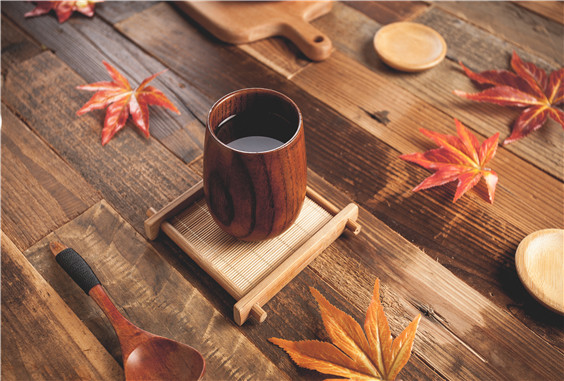
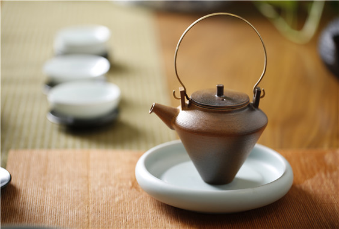
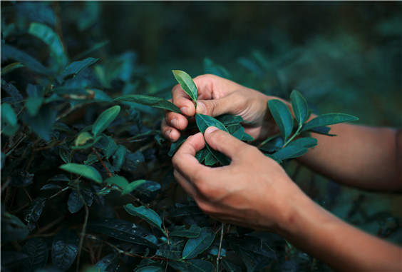

茶道
- 
- 
- 
禅之精神在于悟，茶之意境在于雅，茶承禅意，禅存茶中，把茶的内在精神体验用语言和艺术表现出来就是“雅”，而“雅”所蕴涵的茶的无限“真谛”是需要“吃茶去”才能体验的。而作为“禅茶一味”的禅茶必须是传统的茶之雅与对佛法的领悟的有机结合。
禅茶之旨趣就是籍“雅”来体悟佛法之空性。宇宙间万事万物包括人类自身在内它的本体都是四大所成，即地、水、火、风这四大所成，在禅茶茶道中四大均有所表，即茶具表地大，沏茶之水表水大，给茶水加温之热力表火大，行茶道之动作或品茶表风大。禅茶虽然是“空”，但禅茶含万法。这里所指的“性空”的“性”不是物理学和生物学意义上的物性，而是指一种不依条件（缘）的独立存在的“自性”（自体），“自性”的含义是自己有、自己成、自己规定自己、本来如此、实在恒常的意义，人们只要冷静反复推论思考就会领会，不依任何条件的绝对的独立存在的“自性”是根本没有的。佛法认为宇宙万物都是由各种条件（缘）而生，任何事物都是“缘生则生”、“缘阙则阙”，即产生该事物的条件具备了，该事物就产生而存在，条件不具备，就不能产生。缘生的事物不能离缘而存在，这就叫作“无自性”，即“性空”。
佛法讲“四大皆空”的用意是要人们认清宇宙人生的真相，以解除身心的束缚，获得解脱和自在。能积极进取、淡泊名利、乐于助人、不图回报，既利于社会，又体现自己的人生价值。有些人因不了解“有”的空性本质，过分执着“有”，把“有”当作一种永恒不变的存在，这是一种贪欲的人生，一个人对“有”看得太重，贪得无厌，欲壑难填，那么他就会烦恼痛苦。佛法就用“四大皆空”、“万有性空”来破除他们对世间假“有”的常见。世间还有一些人，他们虽能看出“有”的虚幻实质，但因不了解缘起事物的作用不空，相续不空，认为世界一切万物既然是虚幻的，那么生存还有什么意义呢？于是他们中有的人不顾家庭伦理、社会道德，放纵自己、为所欲为；还有的人则是消极厌世、颓废悲观。这两种人生态度才是虚无主义。佛法就以“性空妙有”、“相续不空”来破除他们执着“空”的断见。


关注火焰山 官方微信公众号
杭州云硒湖火焰山度假
地址：浙江省杭州市桐庐县分水镇

浙ICP备17002784号 | ?2016 Huazhu All Rights reserved.浙江火焰山度假村 浙公网安备31010502000192号